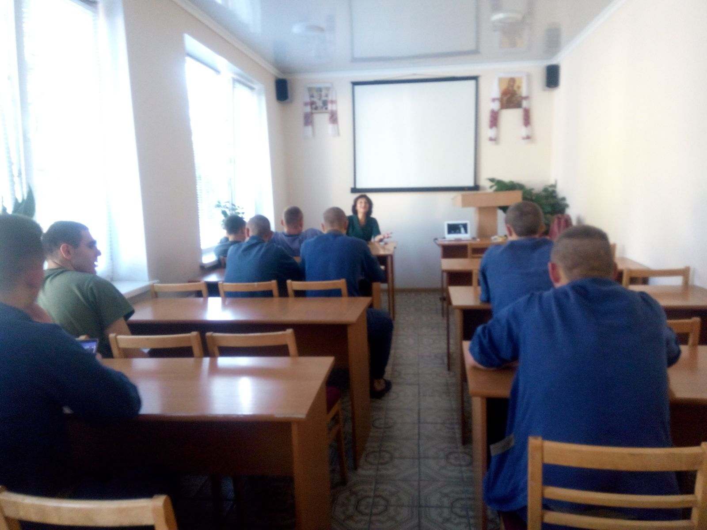

У 2015 році були розроблені та впроваджені методичні рекомендації «Практичні аспекти використання музикотерапії в комплексній реабілітації учасників антитерористичної операції», рекомендовані до видання Вченою радою Української військово-медичної академії (протокол № 175 від 12.10.2015 р.).
Особливої актуальності в рамках цього проекту набули медитативні практики для психологічної реабілітації військовослужбовців. У 2022 році був розроблений Інформаційний лист «Використання практики медитації військовослужбовцями» та створено відеоматеріали з медитативних практик.
Із використанням даних технологій, з 2015 року пройшли реабілітацію понад півтори тисячі військовослужбовців.
У 2023 році розроблені методичні рекомендації «Використання медитативних практик у психологічній реабілітації військовослужбовців».